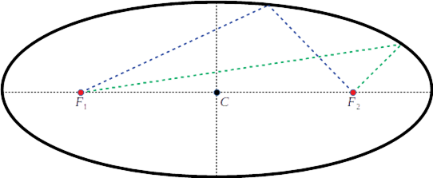

Attention, il ne faut pas confondre le centre d’une ellipse, et les foyers d’une ellipse. Le centre de l’ellipse (le point \(C\)) est le milieu du grand axe et du petit axe représentées en pointillés noirs. Les foyers sont les deux points qui vérifient la propriété géométrique suivante. En prenant n’importe quel point de l’ellipse et en sommant les distances entre ce point et les deux foyers on obtient toujours la même longueur. Autrement dit, la longueur des lignes en pointillés bleue et verte sont les mêmes.
Cette loi n’est pas seulement valable pour les planètes mais aussi pour n’importe quel corps orbitant autour du Soleil (comme la comète de Halley). Plus généralement, elle est valable pour n’importe quel corps orbitant autour d’un corps bien plus massif que lui (satellites autour de la Terre par exemple).